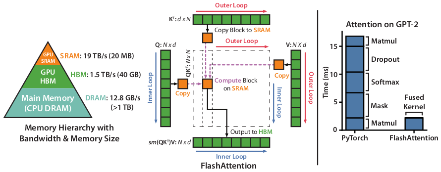
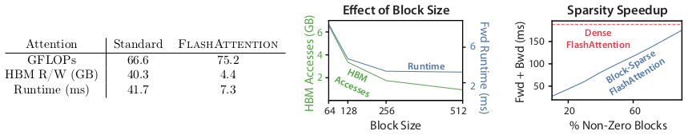
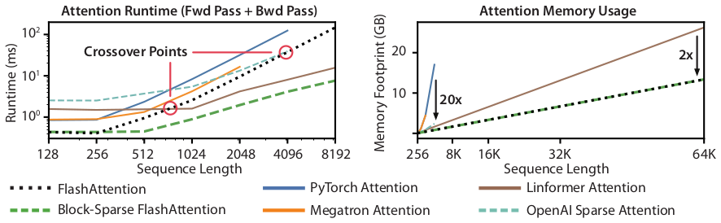
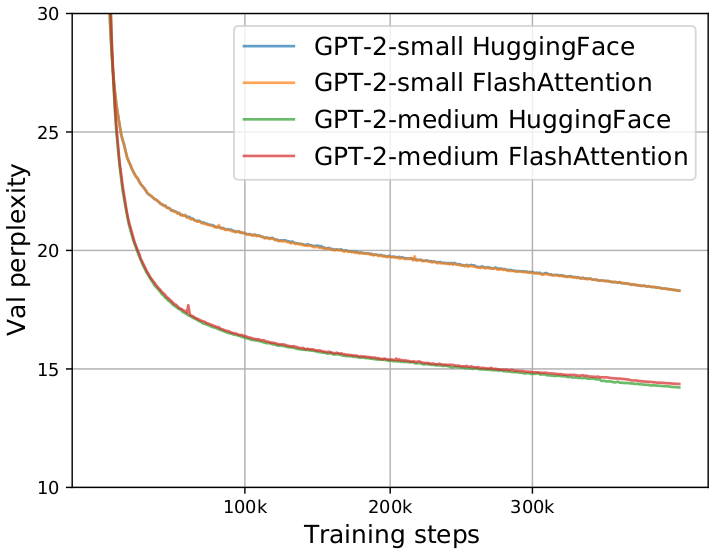
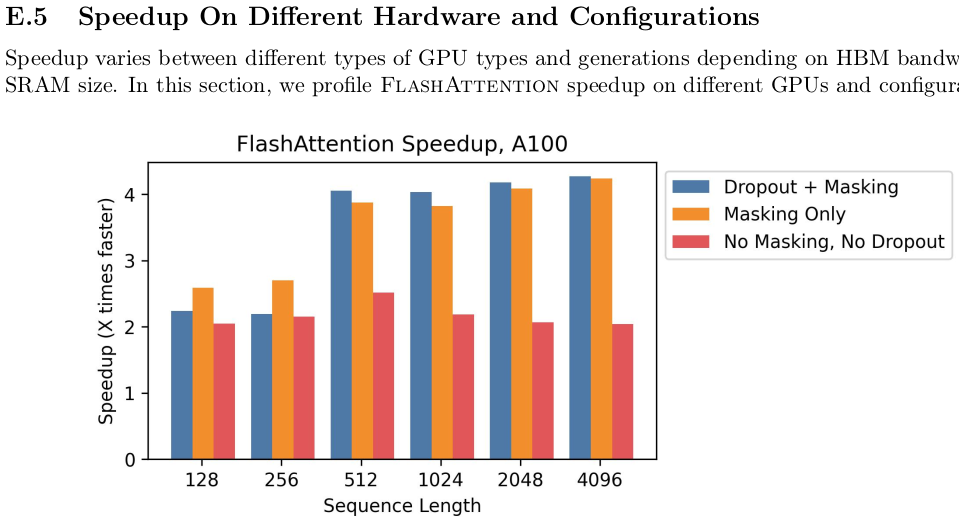
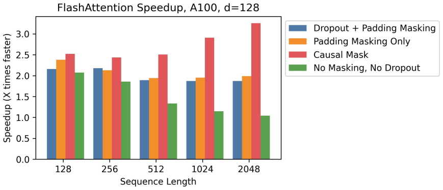
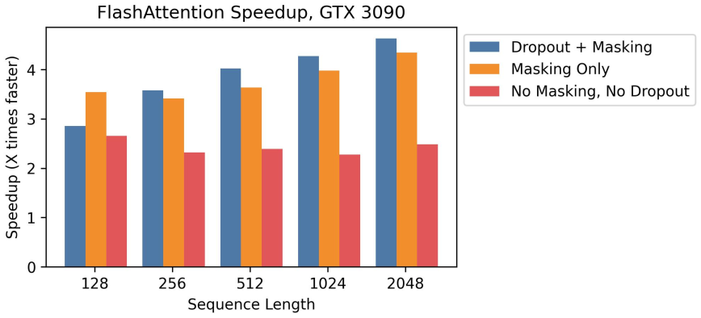
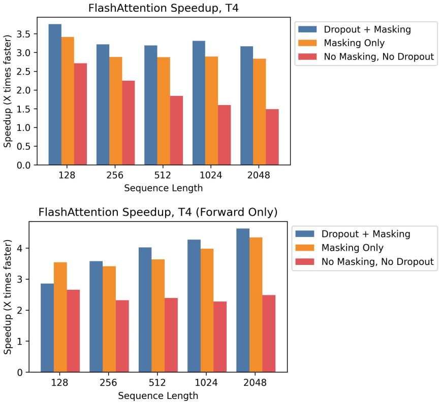

Transformer 在长序列上既慢又耗内存，因为自注意力的时间和内存复杂度与序列长度呈二次关系。近似注意力方法试图通过牺牲模型质量来降低计算复杂度，从而解决该问题，但通常无法实现墙钟时间加速。我们认为，一个缺失的原则是使注意力算法具备 IO 感知——即考虑 GPU 内存层级之间的读写。我们提出 FlashAttention，一种 IO 感知的精确注意力算法，它使用分块（tiling）来减少 GPU 高带宽内存（HBM）与 GPU 片上 SRAM 之间的内存读写次数。我们分析了 FlashAttention 的 IO 复杂度，表明它所需的 HBM 访问次数少于标准注意力，并且在一系列 SRAM 大小下是最优的。我们还将 FlashAttention 扩展到块稀疏注意力，得到一种比现有任何近似注意力方法都更快的近似注意力算法。FlashAttention 训练 Transformer 比现有基线更快：在 BERT-large（序列长度 512）上相比 MLPerf 1.1 训练速度记录获得 15% 的端到端墙钟加速，在 GPT-2（序列长度 1K）上获得 3 倍加速，在 long-range arena（序列长度 1K–4K）上获得 2.4 倍加速。FlashAttention 和块稀疏 FlashAttention 使 Transformer 能够使用更长上下文，从而产生更高质量的模型（GPT-2 困惑度改善 0.7，长文档分类提升 6.4 分），并带来全新能力：首个在 Path-X 挑战（序列长度 16K，准确率 61.4%）和 Path-256（序列长度 64K，准确率 63.1%）上取得优于随机性能的 Transformer。
Transformer 模型 [82] 已成为自然语言处理和图像分类等应用中最广泛使用的架构。Transformer 变得更大 [5]、更深 [83]，但为其配备更长上下文仍然困难 [80]，因为其核心的自注意力模块的时间和内存复杂度与序列长度呈二次关系。一个重要问题是：使注意力更快、更内存高效，是否能帮助 Transformer 模型应对长序列的运行时和内存挑战？
许多近似注意力方法旨在降低注意力的计算和内存需求。这些方法从稀疏近似 [51, 74] 到低秩近似 [12, 50, 84] 及其组合 [3, 9, 92]。尽管这些方法将计算需求降低到与序列长度线性或近线性，但许多方法相比标准注意力并未显示出墙钟加速，也未被广泛采用。一个主要原因是它们关注 FLOP 降低（这可能与墙钟速度不相关），而往往忽略内存访问（IO）开销。
在本文中，我们认为一个缺失的原则是使注意力算法具备 IO 感知 [1]——即仔细考虑对快慢不同内存层级的读写（例如快速 GPU 片上 SRAM 与相对较慢的 GPU 高带宽内存 HBM [45] 之间，图 1 左）。在现代 GPU 上，计算速度已超过内存速度 [61, 62, 63]，Transformer 中的大多数操作受内存访问瓶颈 [43]。IO 感知算法对于类似的受内存限制操作至关重要，因为读写数据可能占运行时的很大部分——例如数据库连接 [71]、图像处理 [70]、数值线性代数 [4] 等 [40, 85]。然而，PyTorch 和 TensorFlow 等常见深度学习 Python 接口不允许细粒度控制内存访问。
我们提出 FlashAttention，一种新的注意力算法，以远更少的内存访问计算精确注意力。我们的主要目标是避免将注意力矩阵读写到 HBM。这需要 (i) 在不访问整个输入的情况下计算 softmax 归约；(ii) 不为反向传播存储大型中间注意力矩阵。我们应用两项成熟技术来应对这些挑战。(i) 我们重构注意力计算，将输入分块，并对输入块进行多次遍历，从而增量执行 softmax 归约（也称为分块）。(ii) 我们存储前向传播中的 softmax 归一化因子，以便在反向传播中快速在片上重新计算注意力，这比从 HBM 读取中间注意力矩阵的标准方法更快。我们用 CUDA 实现 FlashAttention，以实现对内存访问的细粒度控制，并将所有注意力操作融合到一个 GPU 内核中。即使由于重计算增加了 FLOPs，我们的算法运行更快（在 GPT-2 [67] 上最高 7.6 倍，图 1 右），并且使用的内存更少——与序列长度线性——相比标准注意力，这得益于 HBM 访问量的大幅减少。
我们分析了 FlashAttention 的 IO 复杂度 [1]，证明它需要 \(O(N^2 d^2 M^{-1})\) 次 HBM 访问，其中 \(d\) 是头维度，\(M\) 是 SRAM 大小；相比之下标准注意力需要 \(\Omega(Nd + N^2)\)。对于典型的 \(d\) 和 \(M\) 值，FlashAttention 所需的 HBM 访问次数比标准注意力少很多（最高少 9 倍，如图 2 所示）。此外，我们给出了下界，表明不存在精确注意力算法能在所有 SRAM 大小上渐近改善 HBM 访问次数。
我们还表明，FlashAttention 可以作为实现近似注意力算法潜力的有用原语，克服其内存访问开销问题。作为概念验证，我们实现了块稀疏 FlashAttention，一种稀疏注意力算法，比 FlashAttention 本身还快 2–4 倍，可扩展到序列长度 64k。我们证明块稀疏 FlashAttention 的 IO 复杂度比 FlashAttention 好，提升因子与稀疏比例成正比。我们在第 5 节讨论对其他操作（多 GPU 注意力、核回归、块稀疏矩阵乘法）的进一步扩展。我们开源 FlashAttention，以便更容易基于该原语构建。1
我们通过建模更长上下文，实证验证 FlashAttention 加速模型训练并改善模型质量。我们还对 FlashAttention 和块稀疏 FlashAttention 相比先前注意力实现的运行时和内存占用进行了基准测试。
我们提供关于现代硬件（GPU）上常见深度学习操作性能特征的一些背景，并描述注意力的标准实现。
这里我们关注 GPU。其他硬件加速器上的性能类似 [46, 48]。
GPU 内存层级。GPU 内存层级（图 1 左）由多种大小和速度不同的内存组成，较小的内存更快。例如，A100 GPU 有 40–80GB 高带宽内存（HBM），带宽 1.5–2.0TB/s；108 个流式多处理器每个有 192KB 片上 SRAM，带宽估计约 19TB/s [44, 45]。片上 SRAM 比 HBM 快一个数量级，但大小小许多个数量级。随着计算相对于内存速度变快 [61, 62, 63]，操作越来越受内存（HBM）访问瓶颈。因此利用快速 SRAM 变得更加重要。
执行模型。GPU 有大量线程来执行一个操作（称为内核）。每个内核从 HBM 加载输入到寄存器和 SRAM，计算，然后将输出写入 HBM。
性能特征。根据计算和内存访问的平衡，操作可分为计算受限或内存受限。这通常用算术强度 [85] 衡量，即每字节内存访问的算术操作数。
内核融合。加速内存受限操作最常见的方法是内核融合：如果对同一输入应用多个操作，输入可以从 HBM 加载一次，而不是每个操作多次加载。编译器可以自动融合许多逐元素操作 [53, 65, 75]。
给定输入序列 \(\mathbf{Q},\mathbf{K},\mathbf{V}\in\mathbb{R}^{N\times d}\)，其中 \(N\) 是序列长度，\(d\) 是头维度，我们希望计算注意力输出 \(\mathbf{O}\in\mathbb{R}^{N\times d}\)：
其中 softmax 按行应用。
标准注意力实现将矩阵 \(\mathbf{S}\) 和 \(\mathbf{P}\) 物化到 HBM，占用 \(O(N^2)\) 内存。通常 \(N\gg d\)（例如 GPT-2 中 \(N=1024\)，\(d=64\)）。我们在算法 0 中描述标准注意力实现。由于部分或大多数操作是内存受限的（如 softmax），大量内存访问转化为缓慢的墙钟时间。
该问题还因应用于注意力矩阵的其他逐元素操作而加剧，例如对 \(\mathbf{S}\) 应用掩码或对 \(\mathbf{P}\) 应用 dropout。因此，已有许多尝试融合若干逐元素操作，例如将掩码与 softmax 融合 [77]。
在第 3.2 节中，我们将表明标准注意力实现的 HBM 访问次数与序列长度 \(N\) 呈二次关系。我们还将比较标准注意力与我们的方法（FlashAttention）的 FLOPs 数量和 HBM 访问次数。
算法 0 标准注意力实现
Require: HBM 中的矩阵 Q, K, V ∈ R^{N×d}。
1: 从 HBM 分块加载 Q, K，计算 S = QK^T，将 S 写入 HBM。
2: 从 HBM 读取 S，计算 P = softmax(S)，将 P 写入 HBM。
3: 从 HBM 分块加载 P 和 V，计算 O = PV，将 O 写入 HBM。
4: 返回 O。
我们展示如何以更少的 HBM 读写计算精确注意力，并且不为反向传播存储大型中间矩阵。这产生一种既内存高效又在墙钟时间上更快的注意力算法。我们分析其 IO 复杂度，表明我们的方法相比标准注意力需要少得多的 HBM 访问。我们进一步表明 FlashAttention 可作为有用原语，将其扩展到块稀疏注意力。
为便于阐述，这里关注前向传播；附录 B 包含反向传播细节。
给定 HBM 中的输入 \(\mathbf{Q},\mathbf{K},\mathbf{V}\in\mathbb{R}^{N\times d}\)，我们旨在计算注意力输出 \(\mathbf{O}\in\mathbb{R}^{N\times d}\) 并写入 HBM。我们的目标是减少 HBM 访问量（降至 \(N\) 的次二次）。
我们应用两项成熟技术（分块、重计算）来克服以次二次 HBM 访问计算精确注意力的技术挑战。我们在算法 1 中描述。主要思想是将输入 \(\mathbf{Q},\mathbf{K},\mathbf{V}\) 分块，从慢 HBM 加载到快速 SRAM，然后针对这些块计算注意力输出。在相加之前用正确的归一化因子缩放每个块的输出，最终得到正确结果。
分块。我们按块计算注意力。Softmax 耦合 \(\mathbf{K}\) 的列，因此我们用缩放 [51, 60, 66] 分解大型 softmax。为数值稳定性，向量 \(x\in\mathbb{R}^{B}\) 的 softmax 计算为：
因此，如果跟踪一些额外统计量 \((m(x),\ell(x))\)，我们可以一次一块地计算 softmax。2 因此我们将输入 \(\mathbf{Q},\mathbf{K},\mathbf{V}\) 分块（算法 1 第 3 行），计算 softmax 值及额外统计量（算法 1 第 10 行），并合并结果（算法 1 第 12 行）。
重计算。我们的目标之一是不为反向传播存储 \(O(N^2)\) 中间值。反向传播通常需要矩阵 \(\mathbf{S},\mathbf{P}\in\mathbb{R}^{N\times N}\) 来计算关于 \(\mathbf{Q},\mathbf{K},\mathbf{V}\) 的梯度。然而，通过存储输出 \(\mathbf{O}\) 和 softmax 归一化统计量 \((m,\ell)\)，我们可以在反向传播中从 SRAM 中的 \(\mathbf{Q},\mathbf{K},\mathbf{V}\) 块轻松重计算注意力矩阵 \(\mathbf{S}\) 和 \(\mathbf{P}\)。这可以看作一种选择性梯度检查点 [10, 34]。虽然梯度检查点被建议用于降低最大内存需求 [66]，但据我们所知所有实现都必须以速度换内存。相反，即使 FLOPs 更多，我们的重计算由于减少 HBM 访问而加速反向传播（图 2）。完整反向传播描述见附录 B。
实现细节：内核融合。分块使我们能在一个 CUDA 内核中实现算法：从 HBM 加载输入，执行所有计算步骤（矩阵乘法、softmax、可选掩码和 dropout、矩阵乘法），然后将结果写回 HBM（掩码和 dropout 见附录 B）。这避免反复从 HBM 读写输入和输出。
算法 1 FlashAttention
Require: HBM 中的矩阵 Q, K, V ∈ R^{N×d}，大小为 M 的片上 SRAM。
1: 设置块大小 B_c = ceil(M/(4d))，B_r = min(ceil(M/(4d)), d)。
2: 在 HBM 中初始化 O = (0)_{N×d} ∈ R^{N×d}，ℓ = (0)_N ∈ R^N，m = (-∞)_N ∈ R^N。
3: 将 Q 分成 T_r = ceil(N/B_r) 个块 Q_1,…,Q_{T_r}，每块大小 B_r×d；将 K, V 分成 T_c = ceil(N/B_c) 个块 K_1,…,K_{T_c} 和 V_1,…,V_{T_c}，每块大小 B_c×d。
4: 将 O 分成 T_r 个块 O_1,…,O_{T_r}，每块大小 B_r×d；将 ℓ 分成 T_r 个块 ℓ_1,…,ℓ_{T_r}，每块大小 B_r；将 m 分成 T_r 个块 m_1,…,m_{T_r}，每块大小 B_r。
5: for 1 ≤ j ≤ T_c do
6: 从 HBM 加载 K_j, V_j 到片上 SRAM。
7: for 1 ≤ i ≤ T_r do
8: 从 HBM 加载 Q_i, O_i, ℓ_i, m_i 到片上 SRAM。
9: 在片上计算 S_ij = Q_i K_j^T ∈ R^{B_r×B_c}。
10: 在片上计算 m̃_ij = rowmax(S_ij) ∈ R^{B_r}，P̃_ij = exp(S_ij - m̃_ij) ∈ R^{B_r×B_c}（逐点），ℓ̃_ij = rowsum(P̃_ij) ∈ R^{B_r}。
11: 在片上计算 m_i^new = max(m_i, m̃_ij) ∈ R^{B_r}，ℓ_i^new = e^{m_i - m_i^new}ℓ_i + e^{m̃_ij - m_i^new}ℓ̃_ij ∈ R^{B_r}。
12: 将 O_i ← diag(ℓ_i^new)^{-1}(diag(ℓ_i)e^{m_i - m_i^new}O_i + e^{m̃_ij - m_i^new}P̃_ij V_j) 写入 HBM。
13: 将 ℓ_i ← ℓ_i^new，m_i ← m_i^new 写入 HBM。
14: end for
15: end for
16: 返回 O。
我们展示 FlashAttention 的正确性、运行时和内存需求（证明见附录 C）。
定理 1.算法 1 返回 \(\mathbf{O}=\mathrm{softmax}(\mathbf{Q}\mathbf{K}^{\top})\mathbf{V}\)，需要 \(O(N^2d)\) FLOPs，并且除输入和输出外还需要 \(O(N)\) 额外内存。
我们分析 FlashAttention 的 IO 复杂度，表明相比标准注意力显著减少 HBM 访问。我们还给出下界，证明不存在精确注意力算法能在所有 SRAM 大小上渐近改善 HBM 访问次数。证明见附录 C。
定理 2.令 \(N\) 为序列长度，\(d\) 为头维度，\(M\) 为 SRAM 大小，且 \(d\le M\le Nd\)。标准注意力（算法 0）需要 \(\Theta(Nd+N^2)\) 次 HBM 访问，而 FlashAttention（算法 1）需要 \(\Theta(N^2d^2M^{-1})\) 次 HBM 访问。
对于典型的 \(d\)（64–128）和 \(M\)（约 100KB），\(d^2\) 比 \(M\) 小很多倍，因此 FlashAttention 所需的 HBM 访问次数比标准实现少很多倍。这带来更快的执行和更低的内存占用，我们在第 4.3 节验证。
证明的主要思想是：给定 SRAM 大小 \(M\)，我们可以加载大小为 \(\Theta(M)\) 的 \(\mathbf{K},\mathbf{V}\) 块（算法 1 第 6 行）。对于每个 \(\mathbf{K},\mathbf{V}\) 块，我们遍历所有 \(\mathbf{Q}\) 块（算法 1 第 8 行）计算中间值，导致对 \(\mathbf{Q}\) 进行 \(\Theta(NdM^{-1})\) 次遍历。每次遍历加载 \(\Theta(Nd)\) 个元素，总计 \(\Theta(N^2d^2M^{-1})\) 次 HBM 访问。我们类似证明标准注意力反向传播需要 \(\Theta(Nd+N^2)\) 次 HBM 访问，而 FlashAttention 反向传播需要 \(\Theta(N^2d^2M^{-1})\) 次（附录 B）。
我们证明一个下界：在计算精确注意力时，无法对所有 \(M\)（SRAM 大小）渐近改善 HBM 访问次数。
命题 3.令 \(N\) 为序列长度，\(d\) 为头维度，\(M\) 为 SRAM 大小，且 \(d\le M\le Nd\)。不存在算法能在整个区间 \([d,Nd]\) 上以 \(o(N^2d^2M^{-1})\) 次 HBM 访问计算精确注意力。
证明依赖于：对于 \(M=\Theta(Nd)\)，任何算法必须执行 \(\Omega(N^2d^2M^{-1})=\Omega(Nd)\) 次 HBM 访问。这种在 \(M\) 子区间上的下界在流算法文献 [88] 中很常见。我们将以 \(M\) 表示参数化复杂度 [27] 下界留作未来工作。
我们验证 HBM 访问次数是注意力运行时的主要决定因素。图 2（左）显示，尽管 FlashAttention 的 FLOP 数高于标准注意力（由于反向传播重计算），但其 HBM 访问少得多，因此运行时快得多。图 2（中）改变 FlashAttention 块大小 \(B_c\)，导致不同 HBM 访问量，并测量前向传播运行时。随着块大小增加，HBM 访问次数减少（对输入遍历次数减少），运行时下降。对于足够大的块大小（超过 256），运行时随后受其他因素（如算术操作）瓶颈。此外，更大的块无法放入小 SRAM。
我们将 FlashAttention 扩展到近似注意力：提出块稀疏 FlashAttention，其 IO 复杂度比 FlashAttention 小，因子与稀疏性成正比。
给定输入 \(\mathbf{Q},\mathbf{K},\mathbf{V}\in\mathbb{R}^{N\times d}\) 和掩码矩阵 \(\tilde{\mathbf{M}}\in\{0,1\}^{N\times N}\)，我们希望计算：
其中 \((\mathbf{S}\odot\mathbf{1}_{\tilde{\mathbf{M}}})_{kl}=\mathbf{S}_{kl}\) 若 \(\tilde{\mathbf{M}}_{kl}=1\)，否则为 \(-\infty\)。我们要求 \(\tilde{\mathbf{M}}\) 具有块形式：对于某些块大小 \(B_r,B_c\)，对所有 \(k,l\)，\(\tilde{\mathbf{M}}_{k,l}=\mathbf{M}_{ij}\)，其中 \(i=\lfloor k/B_r\rfloor\)，\(j=\lfloor l/B_c\rfloor\)，某些 \(\mathbf{M}\in\{0,1\}^{N/B_r\times N/B_c}\)。
给定预定义块稀疏掩码 \(\mathbf{M}\in\{0,1\}^{N/B_r\times N/B_c}\)，我们可以轻松调整算法 1，只计算注意力矩阵的非零块。算法与算法 1 相同，只是跳过零块。我们在附录 B 算法 5 中复现算法描述。
我们还分析块稀疏 FlashAttention 的 IO 复杂度。
命题 4.令 \(N\) 为序列长度，\(d\) 为头维度，\(M\) 为 SRAM 大小，且 \(d\le M\le Nd\)。块稀疏 FlashAttention（算法 5）需要 \(\Theta(Nd+N^2d^2M^{-1}s)\) 次 HBM 访问，其中 \(s\) 是块稀疏掩码中非零块的比例。
我们看到，应用块稀疏性直接以稀疏性因子改善 IO 复杂度中较大的项。对于大序列长度 \(N\)，\(s\) 通常设为 \(N^{-1/2}\) [11] 或 \(N^{-1}\log N\) [3, 17, 92]，导致 \(\Theta(N\sqrt{N})\) 或 \(\Theta(N\log N)\) IO 复杂度。对于下游实验，我们使用固定蝶形稀疏模式 [17]，已被证明能够近似任意稀疏性 [16]。
图 2（右）验证随着稀疏性增加，块稀疏 FlashAttention 的运行时按比例改善。在 LRA 基准上，块稀疏 FlashAttention 实现 2.8 倍加速，同时性能与标准注意力相当（第 4 节）。
我们评估使用 FlashAttention 训练 Transformer 模型的影响。我们验证关于训练时间和模型准确率的两项主张，并报告注意力运行时和内存基准。
训练速度。FlashAttention 在 BERT 上比 MLPerf 1.1 [58] 速度记录快 15%，在 GPT-2 上比 HuggingFace [87] 快最多 3 倍、比 Megatron [77] 快 1.8 倍。FlashAttention 将 long-range arena（LRA）基准加速 2.4 倍。质量。FlashAttention 将 Transformer 扩展到更长序列，产生更高质量。FlashAttention 以上下文长度 4K 训练 GPT-2 比 Megatron 以长度 1K 训练 GPT-2 更快，同时困惑度好 0.7。建模更长序列在两个长文档分类任务上带来 6.4 分提升。最后，FlashAttention 产生首个在具有挑战性的 Path-X 任务（序列长度 16K）上取得优于随机性能的 Transformer，块稀疏 FlashAttention 产生我们所知首个在 Path-256（序列长度 64K）上取得优于随机性能的序列模型。
注意力基准测试。我们根据序列长度测量 FlashAttention 和块稀疏 FlashAttention 的运行时和内存性能。我们确认 FlashAttention 内存占用与序列长度线性，并且在常见序列长度（最多 2K）上比标准注意力快最多 3 倍。我们确认块稀疏 FlashAttention 运行时与序列长度线性，并且比所有现有近似注意力基线都快。
更多实验细节见附录 E。
BERT。FlashAttention 产生我们所知最快的单节点 BERT 训练速度。我们在 Wikipedia 上使用 FlashAttention 训练 BERT-large [22]。表 1 将训练时间与 Nvidia 为 MLPerf 1.1 [58] 设置训练速度记录的实现进行比较。我们的实现快 15%。
| BERT 实现 | 训练时间（分钟） |
|---|---|
| Nvidia MLPerf 1.1 [58] | 20.0 ± 1.5 |
| FlashAttention（我们的） | 17.4 ± 1.4 |
GPT-2。FlashAttention 在大型 OpenWebtext 数据集 [32] 上训练 GPT-2 [67] 的时间比广泛使用的 HuggingFace [87] 和 Megatron-LM [77] 实现更快。表 2 显示相比 Huggingface 最高 3 倍端到端加速，相比 Megatron-LM 最高 1.7 倍加速。
| 模型 | 实现 | 时间 | 加速 |
|---|---|---|---|
| GPT-2 small | HuggingFace | — | 1× |
| GPT-2 small | FlashAttention | — | 最高 3× |
| GPT-2 medium | Megatron-LM | — | 1× |
| GPT-2 medium | FlashAttention | — | 最高 1.7× |
长文档分类。我们在 MIMIC-III [47] 和 ECtHR [6] 上评估长文档分类。MIMIC-III 包含重症监护病房的医学记录，每个映射到疾病类别；ECtHR 包含欧洲人权法院的案件，每个映射到据称违反的《人权公约》条款。两个数据集都包含非常长的文本文档；MIMIC 平均 2,395 词元，最长 14,562 词元；ECtHR 平均和最长分别为 2,197 和 49,392 词元。我们评估增加预训练 RoBERTa 模型 [56] 序列长度带来的提升（如 Beltagy 等 [3] 重复位置嵌入）。表 5 显示长度 16K 比长度 512 在 MIMIC 上高 4.3 分，长度 8K 比长度 512 在 ECtHR 上高 8.5 分。
| 数据集 | 512 | 1024 | 2048 | 4096 | 8192 | 16384 |
|---|---|---|---|---|---|---|
| MIMIC-III [47] | 52.8 | 50.7 | 51.7 | 54.6 | 56.4 | 57.1 |
| ECtHR [6] | 72.2 | 74.3 | 77.1 | 78.6 | 80.7 | 79.2 |
Path-X 和 Path-256。Path-X 和 Path-256 是 long-range arena 基准中设计用于测试长上下文的挑战性任务。任务是分类黑白 \(128\times128\)（或 \(256\times256\)）图像中两点之间是否有路径连接，图像逐像素输入 Transformer。先前工作中，所有 Transformer 模型要么内存不足，要么只取得随机性能 [80]。人们一直在寻找能建模如此长上下文的替代架构 [37]。我们在此展示 Transformer 模型能够解决 Path-X 和 Path-256 的首个结果（表 6）。我们在 Path-64 上预训练 Transformer，然后通过空间插值位置嵌入迁移到 Path-X。FlashAttention 在 Path-X 上达到 61.4 准确率。此外，块稀疏 FlashAttention 使 Transformer 能扩展到序列长度 64K，在 Path-256 上达到 63.1 准确率4。
| 模型 | Path-X | Path-256 |
|---|---|---|
| Transformer | × | × |
| Informer [84] | × | × |
| Linear Attention [50] | × | × |
| Performer [12] | × | × |
| Local Attention [80] | × | × |
| Reformer [51] | × | × |
| SMYRF [19] | × | × |
| FlashAttention | 61.4 | × |
| 块稀疏 FlashAttention | 56.0 | 63.1 |
我们改变序列长度，并在具有 40 GB HBM 的一块 A100 GPU 上，使用 dropout 和填充掩码，测量 FlashAttention 和块稀疏 FlashAttention 相比各种注意力基线的运行时和内存使用。我们与精确注意力、近似注意力和稀疏注意力的参考实现进行比较。正文报告部分基线；附录 E 包含更多基线和完整细节。
运行时。图 3（左）报告 FlashAttention 和块稀疏 FlashAttention 的前向 + 反向传播运行时（毫秒），与精确、近似和稀疏注意力基线比较（精确数字见附录 E）。运行时随序列长度二次增长，但 FlashAttention 比精确注意力基线快得多，最高比 PyTorch 实现快 3 倍。许多近似/稀疏注意力机制的运行时随序列长度线性增长，但由于内存访问更少，FlashAttention 在短序列上仍比近似和稀疏注意力快。近似注意力运行时在序列长度 512 到 1024 之间开始与 FlashAttention 交叉。另一方面，块稀疏 FlashAttention 在所有序列长度上比我们所知的所有精确、稀疏和近似注意力实现都快。
内存占用。图 3（右）显示 FlashAttention 和块稀疏 FlashAttention 相比各种精确、近似和稀疏注意力基线的内存占用。FlashAttention 和块稀疏 FlashAttention 具有相同内存占用，随序列长度线性增长。FlashAttention 比精确注意力基线内存高效最多 20 倍，并且比近似注意力基线更内存高效。除 Linformer 外，所有其他算法在 64K 之前就在 A100 GPU 上内存不足，而 FlashAttention 仍比 Linformer 高效 2 倍。
我们讨论方法的局限性和未来方向。相关工作见附录 A。
编译到 CUDA。我们当前构建 IO 感知注意力实现的方法需要为每个新注意力实现编写新的 CUDA 内核。这需要以比 PyTorch 低得多的语言编写注意力算法，并需要大量工程努力。实现也可能无法跨 GPU 架构迁移。这些局限表明需要一种方法，支持以高级语言（如 PyTorch）编写注意力算法，并编译到 CUDA 中的 IO 感知实现——类似于图像处理中的 Halide [70]。
IO 感知深度学习。我们相信 IO 感知方法可以扩展到注意力之外。注意力是 Transformer 中内存最密集的计算，但深度网络中的每一层都会访问 GPU HBM。我们希望我们的工作启发其他模块的 IO 感知实现。我们在附录 D 讨论这些潜在扩展。
多 GPU IO 感知方法。我们的 IO 感知注意力实现在单 GPU 上计算注意力时在常数因子内最优。然而，注意力计算可能可跨多个 GPU 并行 [72]。使用多个 GPU 增加了 IO 分析的另一层——考虑 GPU 之间的数据传输。我们希望我们的工作启发该方向的未来研究。
我们的实现以 Apex 的 FMHA 代码（https://github.com/NVIDIA/apex/tree/master/apex/contrib/csrc/fmha）为起点。我们感谢 Young-Jun Ko 对其 FMHA 实现的深入解释，以及对我们关于 CUDA 问题的周到回答。我们感谢 Sabri Eyuboglu、Megan Leszczynski、Laurel Orr、Yuhuai Wu、Beidi Chen 和 Xun Huang 对论文早期草稿的建设性反馈和建议。我们感谢 Markus Rabe 和 Charles Staats 就其注意力算法进行的有益讨论。
我们感谢以下资助：NIH U54EB020405（Mobilize）；NSF CCF1763315（Beyond Sparsity）、CCF1563078（Volume to Velocity）、1937301（RTML）；ARL W911NF-21-2-0251（Interactive Human-AI Teaming）；ONR N000141712266（Unifying Weak Supervision）、N00014-20-1-2480（Understanding and Applying Non-Euclidean Geometry in Machine Learning）、N000142012275（NEPTUNE）；NXP、Xilinx、LETI-CEA、Intel、IBM、Microsoft、NEC、Toshiba、TSMC、ARM、Hitachi、BASF、Accenture、Ericsson、Qualcomm、Analog Devices、Google Cloud、Salesforce、Total、HAI-GCP & HAI-Azure Cloud Credits for Research 计划、Stanford Data Science Initiative（SDSI）、国防部（DoD）通过 National Defense Science and Engineering Graduate Fellowship（NDSEG）计划，以及 Stanford DAWN 项目成员：Facebook、Google 和 VMware。美国政府被授权出于政府目的复制和分发重印本，尽管有任何版权声明。本文表达的任何意见、发现、结论或建议均为作者观点，不一定反映 NIH、ONR 或美国政府的观点、政策或认可。Atri Rudra 的研究由 NSF 资助 CCF-1763481 支持。
[1] Alok Aggarwal and S Vitter, Jeffrey. The input/output complexity of sorting and related problems. Communications of the ACM, 31(9):1116–1127, 1988.
[2] Irwan Bello. LambdaNetworks: Modeling long-range interactions without attention. arXiv preprint arXiv:2102.08602, 2021.
[3] Iz Beltagy, Matthew E Peters, and Arman Cohan. Longformer: The long-document transformer. arXiv preprint arXiv:2004.05150, 2020.
[4] L Susan Blackford, Antoine Petitet, Roldan Pozo, Karin Remington, R Clint Whaley, James Demmel, Jack Dongarra, Iain Duff, Sven Hammarling, Greg Henry, et al. An updated set of basic linear algebra subprograms (blas). ACM Transactions on Mathematical Software, 28(2):135–151, 2002.
[5] Tom Brown, Benjamin Mann, Nick Ryder, Melanie Subbiah, Jared D Kaplan, Prafulla Dhariwal, Arvind Neelakantan, Pranav Shyam, Girish Sastry, Amanda Askell, et al. Language models are few-shot learners. Advances in neural information processing systems, 33:1877–1901, 2020.
[6] Ilias Chalkidis, Ion Androutsopoulos, and Nikolaos Aletras. Neural legal judgment prediction in English. In Proceedings of the 57th Annual Meeting of the Association for Computational Linguistics, pages 4317–4323, Florence, Italy, 2019. Association for Computational Linguistics.
[7] Ilias Chalkidis, Manos Fergadiotis, Dimitrios Tsarapatsanis, Nikolaos Aletras, Ion Androutsopoulos, and Prodromos Malakasiotis. Paragraph-level rationale extraction through regularization: A case study on european court of human rights cases. In Proceedings of the Annual Conference of the North American Chapter of the Association for Computational Linguistics, Mexico City, Mexico, 2021. Association for Computational Linguistics.
[8] Benjamin Charlier, Jean Feydy, Joan Alexis Glaunès, François-David Collin, and Ghislain Durif. Kernel operations on the gpu, with autodiff, without memory overflows. Journal of Machine Learning Research, 22(74):1–6, 2021.
[9] Beidi Chen, Tri Dao, Eric Winsor, Zhao Song, Atri Rudra, and Christopher Ré. Scatterbrain: Unifying sparse and low-rank attention. In Advances in Neural Information Processing Systems (NeurIPS), 2021.
[10] Tianqi Chen, Bing Xu, Chiyuan Zhang, and Carlos Guestrin. Training deep nets with sublinear memory cost. arXiv preprint arXiv:1604.06174, 2016.
[11] Rewon Child, Scott Gray, Alec Radford, and Ilya Sutskever. Generating long sequences with sparse transformers. arXiv preprint arXiv:1904.10509, 2019.
[12] Krzysztof Marcin Choromanski, Valerii Likhosherstov, David Dohan, Xingyou Song, Andreea Gane, Tamas Sarlos, Peter Hawkins, Jared Quincy Davis, Afroz Mohiuddin, Lukasz Kaiser, et al. Rethinking attention with performers. In International Conference on Learning Representations (ICLR), 2020.
[13] Xiang Dai, Ilias Chalkidis, Sune Darkner, and Desmond Elliott. Revisiting transformer-based models for long document classification. arXiv preprint arXiv:2204.06683, 2022.
[14] Zihang Dai, Zhilin Yang, Yiming Yang, Jaime G Carbonell, Quoc Le, and Ruslan Salakhutdinov. Transformer-XL: Attentive language models beyond a fixed-length context. In Proceedings of the 57th Annual Meeting of the Association for Computational Linguistics, pages 2978–2988, 2019.
[15] Tri Dao, Albert Gu, Matthew Eichhorn, Atri Rudra, and Christopher Ré. Learning fast algorithms for linear transforms using butterfly factorizations. In International Conference on Machine Learning (ICML), 2019.
[16] Tri Dao, Nimit Sohoni, Albert Gu, Matthew Eichhorn, Amit Blonder, Megan Leszczynski, Atri Rudra, and Christopher Ré. Kaleidoscope: An efficient, learnable representation for all structured linear maps. In International Conference on Learning Representations (ICLR), 2020.
[17] Tri Dao, Beidi Chen, Kaizhao Liang, Jiaming Yang, Zhao Song, Atri Rudra, and Christopher Ré. Pixelated butterfly: Simple and efficient sparse training for neural network models. In International Conference on Learning Representations (ICLR), 2022.
[18] Tri Dao, Beidi Chen, Nimit Sohoni, Arjun Desai, Michael Poli, Jessica Grogan, Alexander Liu, Aniruddh Rao, Atri Rudra, and Christopher Ré. Monarch: Expressive structured matrices for efficient and accurate training. In International Conference on Machine Learning (ICML), 2022.
[19] Giannis Daras, Nikita Kitaev, Augustus Odena, and Alexandros G Dimakis. Smyrf-efficient attention using asymmetric clustering. Advances in Neural Information Processing Systems, 33:6476–6489, 2020.
[20] Christopher De Sa, Albert Gu, Rohan Puttagunta, Christopher Ré, and Atri Rudra. A two-pronged progress in structured dense matrix vector multiplication. In Proceedings of the Twenty-Ninth Annual ACM-SIAM Symposium on Discrete Algorithms, pages 1060–1079. SIAM, 2018.
[21] Peter J Denning. The working set model for program behavior. Communications of the ACM, 11(5):323–333, 1968.
[22] Jacob Devlin, Ming-Wei Chang, Kenton Lee, and Kristina Toutanova. BERT: Pre-training of deep bidirectional transformers for language understanding. 2019.
[23] Xin Dong, Shangyu Chen, and Sinno Jialin Pan. Learning to prune deep neural networks via layer-wise optimal brain surgeon. arXiv preprint arXiv:1705.07565, 2017.
[24] Alexey Dosovitskiy, Lucas Beyer, Alexander Kolesnikov, Dirk Weissenborn, Xiaohua Zhai, Thomas Unterthiner, Mostafa Dehghani, Matthias Minderer, Georg Heigold, Sylvain Gelly, et al. An image is worth 16x16 words: Transformers for image recognition at scale. In International Conference on Learning Representations, 2020.
[25] Y Eidelman and I Gohberg. On a new class of structured matrices. Integral Equations and Operator Theory, 34(3):293–324, 1999.
[26] Jean Feydy, Joan Glaunes, Benjamin Charlier, and Michael Bronstein. Fast geometric learning with symbolic matrices. Advances in Neural Information Processing Systems, 33, 2020.
[27] Jörg Flum and Martin Grohe. Parameterized Complexity Theory. Springer, 2006.
[28] Jonathan Frankle and Michael Carbin. The lottery ticket hypothesis: Finding sparse, trainable neural networks. In International Conference on Learning Representations, 2018.
[29] Jonathan Frankle, Gintare Karolina Dziugaite, Daniel M Roy, and Michael Carbin. Stabilizing the lottery ticket hypothesis. arXiv preprint arXiv:1903.01611, 2019.
[30] Jonathan Frankle, Gintare Karolina Dziugaite, Daniel Roy, and Michael Carbin. Linear mode connectivity and the lottery ticket hypothesis. In International Conference on Machine Learning, pages 3259–3269. PMLR, 2020.
[31] Karan Goel, Albert Gu, Chris Donahue, and Christopher Ré. It’s raw! audio generation with state-space models. In International Conference on Machine Learning (ICML), 2022.
[32] Aaron Gokaslan, Vanya Cohen, Pavlick Ellie, and Stefanie Tellex. Openwebtext corpus, 2019.
[33] Jim Gray, Surajit Chaudhuri, Adam Bosworth, Andrew Layman, Don Reichart, Murali Venkatrao, Frank Pellow, and Hamid Pirahesh. Data cube: A relational aggregation operator generalizing group-by, cross-tab, and sub-totals. Data mining and knowledge discovery, 1(1):29–53, 1997.
[34] Andreas Griewank and Andrea Walther. Evaluating derivatives: principles and techniques of algorithmic differentiation. SIAM, 2008.
[35] Albert Gu, Tri Dao, Stefano Ermon, Atri Rudra, and Christopher Ré. Hippo: Recurrent memory with optimal polynomial projections. In Advances in neural information processing systems (NeurIPS), 2020.
[36] Albert Gu, Isys Johnson, Karan Goel, Khaled Saab, Tri Dao, Atri Rudra, and Christopher Ré. Combining recurrent, convolutional, and continuous-time models with linear state space layers. Advances in Neural Information Processing Systems, 34, 2021.
[37] Albert Gu, Karan Goel, and Christopher Ré. Efficiently modeling long sequences with structured state spaces. In The International Conference on Learning Representations (ICLR), 2022.
[38] Song Han, Jeff Pool, John Tran, and William J Dally. Learning both weights and connections for efficient neural networks. arXiv preprint arXiv:1506.02626, 2015.
[39] Song Han, Huizi Mao, and William J Dally. Deep compression: Compressing deep neural networks with pruning, trained quantization and huffman coding. In International Conference on Learning Representations, 2016.
[40] John Hennessy and David Patterson. Memory hierarchy design. Computer Architecture: A Quantitative Approach, pages 390–525, 2003.
[41] Sara Hooker. The hardware lottery. arXiv preprint arXiv:2009.06489, 2020.
[42] Weizhe Hua, Zihang Dai, Hanxiao Liu, and Quoc V Le. Transformer quality in linear time. arXiv preprint arXiv:2202.10447, 2022.
[43] Andrei Ivanov, Nikoli Dryden, Tal Ben-Nun, Shigang Li, and Torsten Hoefler. Data movement is all you need: A case study on optimizing transformers. Proceedings of Machine Learning and Systems, 3:711–732, 2021.
[44] Zhe Jia and Peter Van Sandt. Dissecting the Ampere GPU architecture via microbenchmarking. GPU Technology Conference, 2021.
[45] Zhe Jia, Marco Maggioni, Benjamin Staiger, and Daniele P Scarpazza. Dissecting the nvidia Volta GPU architecture via microbenchmarking. arXiv preprint arXiv:1804.06826, 2018.
[46] Zhe Jia, Blake Tillman, Marco Maggioni, and Daniele Paolo Scarpazza. Dissecting the graphcore IPU architecture via microbenchmarking. arXiv preprint arXiv:1912.03413, 2019.
[47] Alistair EW Johnson, Tom J Pollard, Lu Shen, Li-wei H Lehman, Mengling Feng, Mohammad Ghassemi, Benjamin Moody, Peter Szolovits, Leo Anthony Celi, and Roger G Mark. Mimic-iii, a freely accessible critical care database. Scientific data, 3(1):1–9, 2016.
[48] Norman P Jouppi, Cliff Young, Nishant Patil, David Patterson, Gaurav Agrawal, Raminder Bajwa, Sarah Bates, Suresh Bhatia, Nan Boden, Al Borchers, et al. In-datacenter performance analysis of a tensor processing unit. In Proceedings of the 44th annual international symposium on computer architecture, pages 1–12, 2017.
[49] Thomas Kailath, Sun-Yuan Kung, and Martin Morf. Displacement ranks of matrices and linear equations. Journal of Mathematical Analysis and Applications, 68(2):395–407, 1979.
[50] Angelos Katharopoulos, Apoorv Vyas, Nikolaos Pappas, and François Fleuret. Transformers are RNNs: Fast autoregressive transformers with linear attention. In International Conference on Machine Learning, pages 5156–5165. PMLR, 2020.
[51] Nikita Kitaev, Lukasz Kaiser, and Anselm Levskaya. Reformer: The efficient transformer. In The International Conference on Machine Learning (ICML), 2020.
[52] Zhenzhong Lan, Mingda Chen, Sebastian Goodman, Kevin Gimpel, Piyush Sharma, and Radu Soricut. Albert: A lite BERT for self-supervised learning of language representations. In The International Conference on Learning Representations (ICLR), 2020.
[53] Mingzhen Li, Yi Liu, Xiaoyan Liu, Qingxiao Sun, Xin You, Hailong Yang, Zhongzhi Luan, Lin Gan, Guangwen Yang, and Depei Qian. The deep learning compiler: A comprehensive survey. IEEE Transactions on Parallel and Distributed Systems, 32(3):708–727, 2020.
[54] Valerii Likhosherstov, Krzysztof Choromanski, Jared Davis, Xingyou Song, and Adrian Weller. Sub-linear memory: How to make performers slim. arXiv preprint arXiv:2012.11346, 2020.
[55] Ji Lin, Yongming Rao, Jiwen Lu, and Jie Zhou. Runtime neural pruning. In Advances in Neural Information Processing Systems, volume 30, 2017.
[56] Yinhan Liu, Myle Ott, Naman Goyal, Jingfei Du, Mandar Joshi, Danqi Chen, Omer Levy, Mike Lewis, Luke Zettlemoyer, and Veselin Stoyanov. Roberta: A robustly optimized bert pretraining approach. arXiv preprint arXiv:1907.11692, 2019.
[57] Xuezhe Ma, Xiang Kong, Sinong Wang, Chunting Zhou, Jonathan May, Hao Ma, and Luke Zettlemoyer. Luna: Linear unified nested attention. Advances in Neural Information Processing Systems, 34, 2021.
[58] Peter Mattson, Christine Cheng, Gregory Diamos, Cody Coleman, Paulius Micikevicius, David Patterson, Hanlin Tang, Gu-Yeon Wei, Peter Bailis, Victor Bittorf, et al. Mlperf training benchmark. Proceedings of Machine Learning and Systems, 2:336–349, 2020.
[59] Frank McSherry, Michael Isard, and Derek G Murray. Scalability! but at what COST? In 15th Workshop on Hot Topics in Operating Systems (HotOS XV), 2015.
[60] Maxim Milakov and Natalia Gimelshein. Online normalizer calculation for softmax. arXiv preprint arXiv:1805.02867, 2018.
[61] NVIDIA. Nvidia Tesla V100 GPU architecture, 2017.
[62] NVIDIA. Nvidia A100 tensor core GPU architecture, 2020.
[63] NVIDIA. Nvidia H100 tensor core GPU architecture, 2022.
[64] D Stott Parker. Random butterfly transformations with applications in computational linear algebra. 1995.
[65] Adam Paszke, Sam Gross, Francisco Massa, Adam Lerer, James Bradbury, Gregory Chanan, Trevor Killeen, Zeming Lin, Natalia Gimelshein, Luca Antiga, et al. Pytorch: An imperative style, high-performance deep learning library. Advances in neural information processing systems, 32, 2019.
[66] Markus N Rabe and Charles Staats. Self-attention does not need \(O(n^2)\) memory. arXiv preprint arXiv:2112.05682, 2021.
[67] Alec Radford, Jeffrey Wu, Rewon Child, David Luan, Dario Amodei, Ilya Sutskever, et al. Language models are unsupervised multitask learners. OpenAI blog, 1(8):9, 2019.
[68] Jack Rae and Ali Razavi. Do transformers need deep long-range memory? In Proceedings of the 58th Annual Meeting of the Association for Computational Linguistics, Online, July 2020. Association for Computational Linguistics.
[69] Jack W Rae, Anna Potapenko, Siddhant M Jayakumar, and Timothy P Lillicrap. Compressive transformers for long-range sequence modelling. In The International Conference on Learning Representations (ICLR), 2020.
[70] Jonathan Ragan-Kelley, Connelly Barnes, Andrew Adams, Sylvain Paris, Fredo Durand, and Saman Amarasinghe. Halide: a language and compiler for optimizing parallelism, locality, and recomputation in image processing pipelines. ACM Sigplan Notices, 48(6):519–530, 2013.
[71] Raghu Ramakrishnan, Johannes Gehrke, and Johannes Gehrke. Database management systems, volume 3. McGraw-Hill New York, 2003.
[72] Benjamin Recht and Christopher Ré. Parallel stochastic gradient algorithms for large-scale matrix completion. Mathematical Programming Computation, 5(2):201–226, 2013.
[73] Hongyu Ren, Hanjun Dai, Zihang Dai, Mengjiao Yang, Jure Leskovec, Dale Schuurmans, and Bo Dai. Combiner: Full attention transformer with sparse computation cost. Advances in Neural Information Processing Systems, 34, 2021.
[74] Aurko Roy, Mohammad Saffar, Ashish Vaswani, and David Grangier. Efficient content-based sparse attention with routing transformers. Transactions of the Association for Computational Linguistics, 9:53–68, 2021.
[75] Amit Sabne. XLA: Compiling machine learning for peak performance. 2020.
[76] Victor Sanh, Thomas Wolf, and Alexander M Rush. Movement pruning: Adaptive sparsity by fine-tuning. arXiv preprint arXiv:2005.07683, 2020.
[77] Mohammad Shoeybi, Mostofa Patwary, Raul Puri, Patrick LeGresley, Jared Casper, and Bryan Catanzaro. Megatron-LM: Training multi-billion parameter language models using model parallelism. arXiv preprint arXiv:1909.08053, 2019.
[78] Vikas Sindhwani, Tara Sainath, and Sanjiv Kumar. Structured transforms for small-footprint deep learning. In Advances in Neural Information Processing Systems, pages 3088–3096, 2015.
[79] Sainbayar Sukhbaatar, Edouard Grave, Piotr Bojanowski, and Armand Joulin. Adaptive attention span in transformers. In Proceedings of the Annual Meeting of the Association for Computational Linguistics, 2019.
[80] Yi Tay, Mostafa Dehghani, Samira Abnar, Yikang Shen, Dara Bahri, Philip Pham, Jinfeng Rao, Liu Yang, Sebastian Ruder, and Donald Metzler. Long range arena: A benchmark for efficient transformers. In International Conference on Learning Representations, 2020.
[81] Yi Tay, Mostafa Dehghani, Dara Bahri, and Donald Metzler. Efficient transformers: A survey. arXiv preprint arXiv:2009.06732, 2021.
[82] Ashish Vaswani, Noam Shazeer, Niki Parmar, Jakob Uszkoreit, Llion Jones, Aidan N Gomez, Lukasz Kaiser, and Illia Polosukhin. Attention is all you need. Advances in neural information processing systems, 30, 2017.
[83] Hongyu Wang, Shuming Ma, Li Dong, Shaohan Huang, Dongdong Zhang, and Furu Wei. Deepnet: Scaling transformers to 1,000 layers. arXiv preprint arXiv:2203.00555, 2022.
[84] Sinong Wang, Belinda Z Li, Madian Khabsa, Han Fang, and Hao Ma. Linformer: Self-attention with linear complexity. arXiv preprint arXiv:2006.04768, 2020.
[85] Samuel Williams, Andrew Waterman, and David Patterson. Roofline: an insightful visual performance model for multicore architectures. Communications of the ACM, 52(4):65–76, 2009.
[86] Michael E Wolf and Monica S Lam. A data locality optimizing algorithm. In Proceedings of the ACM SIGPLAN 1991 conference on Programming language design and implementation, pages 30–44, 1991.
[87] Thomas Wolf, Lysandre Debut, Victor Sanh, Julien Chaumond, Clement Delangue, Anthony Moi, Pierric Cistac, Tim Rault, Remi Louf, Morgan Funtowicz, Joe Davison, Sam Shleifer, Patrick von Platen, Clara Ma, Yacine Jernite, Julien Plu, Canwen Xu, Teven Le Scao, Sylvain Gugger, Mariama Drame, Quentin Lhoest, and Alexander M. Rush. Transformers: State-of-the-art natural language processing. In Proceedings of the 2020 Conference on Empirical Methods in Natural Language Processing: System Demonstrations, pages 38–45, Online, October 2020. Association for Computational Linguistics.
[88] David P Woodruff. Optimal space lower bounds for all frequency moments. In SODA, volume 4, pages 167–175. Citeseer, 2004.
[89] Felix Wu, Angela Fan, Alexei Baevski, Yann N Dauphin, and Michael Auli. Pay less attention with lightweight and dynamic convolutions. In The International Conference on Learning Representations (ICLR), 2019.
[90] Yunyang Xiong, Zhanpeng Zeng, Rudrasis Chakraborty, Mingxing Tan, Glenn Fung, Yin Li, and Vikas Singh. Nystromformer: A nystrom-based algorithm for approximating self-attention. In Proceedings of the AAAI Conference on Artificial Intelligence, volume 35, page 14138, 2021.
[91] Li Yuan, Yunpeng Chen, Tao Wang, Weihao Yu, Yujun Shi, Zi-Hang Jiang, Francis EH Tay, Jiashi Feng, and Shuicheng Yan. Tokens-to-token vit: Training vision transformers from scratch on imagenet. In Proceedings of the IEEE/CVF International Conference on Computer Vision, pages 558–567, 2021.
[92] Manzil Zaheer, Guru Guruganesh, Kumar Avinava Dubey, Joshua Ainslie, Chris Alberti, Santiago Ontanon, Philip Pham, Anirudh Ravula, Qifan Wang, Li Yang, et al. Big bird: Transformers for longer sequences. Advances in Neural Information Processing Systems, 33, 2020.
[93] Shuangfei Zhai, Walter Talbott, Nitish Srivastava, Chen Huang, Hanlin Goh, Ruixiang Zhang, and Josh Susskind. An attention free transformer. arXiv preprint arXiv:2105.14103, 2021.
[94] Chen Zhu, Wei Ping, Chaowei Xiao, Mohammad Shoeybi, Tom Goldstein, Anima Anandkumar, and Bryan Catanzaro. Long-short transformer: Efficient transformers for language and vision. Advances in Neural Information Processing Systems, 34, 2021.
IO 感知运行时优化。为快/慢内存读写进行优化的广泛概念在计算机科学中有很长历史，并有许多名称。我们在此最直接地连接到分析 I/O 复杂度的文献 [1]，但内存层级概念是基础的，并以多种形式出现，从工作集模型 [21] 到数据局部性 [86]，到算术强度的 Roofline 模型 [85]，到可扩展性分析 [59]，再到计算机架构的标准教科书处理 [40]。我们希望这项工作鼓励社区在深度学习栈的更多部分采用这些思想。
使用结构化矩阵的高效 ML 模型。矩阵乘法是大多数机器学习模型的核心计算瓶颈。为降低计算复杂度，已有许多方法在更高效的矩阵集合上学习。这些矩阵称为结构化矩阵，具有次二次（\(n\times n\) 维度下 \(o(n^2)\)）参数数量和运行时。最常见的结构化矩阵例子是稀疏矩阵和低秩矩阵，以及信号处理中常见的快速变换（Fourier、Chebyshev、正弦/余弦、正交多项式）。机器学习中已提出几类更一般的结构化矩阵：Toeplitz 类 [78]、低位移秩 [49]、准可分 [25]。我们用于块稀疏注意力的蝶形模式受以下事实启发：蝶形矩阵 [15, 64] 及其乘积已被证明能够以几乎最优的运行时和参数数量表达任何结构化矩阵 [16, 20]。然而，尽管结构化矩阵在理论上高效，它们尚未被广泛采用，因为很难将其效率转化为墙钟加速，因为稠密无约束矩阵乘法有非常优化的实现，这一现象称为硬件彩票 [41]。蝶形矩阵的扩展 [17, 18] 旨在使蝶形矩阵更硬件友好。
稀疏训练。我们的块稀疏 FlashAttention 可看作使稀疏模型训练更高效的一步。稀疏模型在通过稀疏化权重矩阵压缩模型用于推理（剪枝）方面取得了成功 [23, 38, 39, 55, 76]。对于模型训练，彩票假设 [28, 29, 30] 表明存在从更大稠密网络派生的小型子网络，其性能与原始稠密网络一样好。我们的块稀疏 FlashAttention 也可看作注意力背景下的固定彩票：我们在训练中将稀疏模式固定为蝶形模式，并观察到它在 Long-range Arena 任务上几乎与（稠密）FlashAttention 表现一样好。
高效 Transformer。基于 Transformer 的模型已成为自然语言处理 [22] 和计算机视觉 [24, 91] 中最广泛使用的架构。然而，其计算瓶颈之一是时间和内存随序列长度二次增长。有许多方法克服该瓶颈，包括基于哈希（即稀疏）的近似，如 Reformer [51] 和 Smyrf [19]，以及低秩近似，如 Performer [12, 54]。甚至可以将稀疏和低秩近似结合以获得更好准确率（例如 Longformer [3]、BigBird [92]、Scatterbrain [9]、Long-short transformer [94]、Combiner [73]）。其他方法包括沿序列维度压缩以一次关注多个词元 [52, 57, 79, 89]。也可以关注先前序列的状态以帮助延长上下文（例如 Transformer-XL [14] 和 Compressive Transformer [69]）。更多细节推荐综述 [81]。
还有几条工作线开发其他模块代替注意力以建模更长上下文。HiPPO [35] 及其扩展，最著名的是 S4 [31, 36, 37]，将历史投影到多项式基上，通过状态空间模型允许准确重建历史。它们结合了 CNN（高效训练）、RNN（高效推理）和连续模型（对采样率变化鲁棒）的优势。LambdaNetworks [2]、AFT [93] 和 FLASH [42] 是在图像分类和语言建模背景下替代注意力的其他尝试。
我们首先推导注意力的前向和反向传播，并表明它们可以以内存高效方式计算（需要与序列长度线性而非二次的额外内存）。尽管它们减少了所需额外内存，但朴素地仍会产生二次 HBM 访问，导致执行速度较慢。我们描述实现前向和反向传播的 FlashAttention 算法。
使注意力内存高效的主要挑战是 softmax 耦合 \(\mathbf{K}\) 的列（以及 \(\mathbf{V}\) 的列）。我们的方法是单独计算 softmax 归一化常数以解耦列。该技术 [60] 已在文献 [51, 66] 中使用，表明注意力计算不需要二次额外内存（尽管 HBM 访问次数仍是二次，导致运行时慢）。
为简单起见，这里省略 softmax 中的 max-shifting 步骤。附录 B.3 中的完整算法包含所有步骤。
回想给定输入序列 \(\mathbf{Q},\mathbf{K},\mathbf{V}\in\mathbb{R}^{N\times d}\)，我们希望计算注意力输出 \(\mathbf{O}\in\mathbb{R}^{N\times d}\)：
有 \(S_{ij}=q_i^Tk_j\)，其中 \(q_i\) 和 \(k_j\) 分别是 \(\mathbf{Q}\) 和 \(\mathbf{K}\) 的第 \(i\) 和第 \(j\) 列。定义 softmax 归一化常数：
令 \(v_j\) 为 \(\mathbf{V}\) 的第 \(j\) 列，则输出的第 \(i\) 列为
我们看到，一旦计算 \(L_i\)，就可以通过重复求和 \(\frac{e^{q_i^Tk_j}}{L_i}v_j\) 而无需额外内存计算 \(o_i\)。因此前向传播可以用 \(O(n)\) 额外内存计算：
我们推导注意力的反向传播，并表明它也可以用线性内存计算。Rabe 和 Staats [66] 建议通过对内存高效前向传播应用梯度检查点，可以在没有二次额外内存的情况下完成反向传播。我们则显式推导反向传播，并展示如何以内存高效方式计算。
假设存在标量损失函数 \(\phi\)，令输出梯度为 \(\mathbf{dO}\in\mathbb{R}^{n\times d}\)（其中 \(\mathbf{dO}\) 表示 \(\frac{\partial\phi}{\partial\mathbf{O}}\)）。我们希望计算输入梯度 \(\mathbf{dQ},\mathbf{dK},\mathbf{dV}\in\mathbb{R}^{n\times d}\)（分别表示 \(\frac{\partial\phi}{\partial\mathbf{Q}},\frac{\partial\phi}{\partial\mathbf{K}},\frac{\partial\phi}{\partial\mathbf{V}}\)）。
梯度 \(\mathbf{dV}\) 很容易看出。手工应用反向模式自动微分（即链式法则），得到（矩阵记号）\(\mathbf{dV}=\mathbf{P}^T\mathbf{dO}\)。因此：
由于已计算 \(L_i\)，\(dv_j\) 可以通过重复求和而无需额外内存计算。
梯度 \(\mathbf{dQ}\) 和 \(\mathbf{dK}\) 稍复杂。我们先经过梯度 \(\mathbf{dP}\) 和 \(\mathbf{dS}\)。由式 (2) 有 \(\mathbf{dP}=\mathbf{dO}\mathbf{V}^T\)，因此：
回想 \(P_i=\mathrm{softmax}(S_i)\)。利用 \(y=\mathrm{softmax}(x)\) 的雅可比为 \(\mathrm{diag}(y)-yy^T\)，有
其中 \(\circ\) 表示逐点乘法。定义
则
因此
现在可以得到梯度 dQ 和 dK。回想 \(S_{ij}=q_i^Tk_j\)，所以
类似地，
因此反向传播也可以用 \(O(n)\) 额外内存计算：
我们描述 FlashAttention 前向传播的完整细节。给定输入序列 \(\mathbf{Q},\mathbf{K},\mathbf{V}\in\mathbb{R}^{N\times d}\)，我们希望计算注意力输出 \(\mathbf{O}\in\mathbb{R}^{N\times d}\)：
其中 \(\tau\in\mathbb{R}\) 是 softmax 缩放（通常 \(\frac{1}{\sqrt{d}}\)），MASK 是将输入某些条目设为 \(-\infty\) 并保持其他条目不变的掩码函数（例如批次中序列长度不同并填充时的键填充掩码），dropout \((x,p)\) 对 \(x\) 逐元素应用 dropout（即以概率 \(1-p\) 输出 \(\frac{x}{1-p}\)，以概率 \(p\) 输出 0）。
完整算法见算法 2。我们保存输出 \(\mathbf{O}\)、softmax 统计量 \(\ell\) 和 \(m\)，以及伪随机数生成器状态 \(\mathcal{R}\) 供反向传播使用。
算法 2 FlashAttention 前向传播
1: 初始化伪随机数生成器状态 R 并保存到 HBM。
2: 设置块大小 B_c = ceil(M/(4d))，B_r = min(ceil(M/(4d)), d)。
3: 在 HBM 中初始化 O = (0)_{N×d} ∈ R^{N×d}，ℓ = (0)_N ∈ R^N，m = (-∞)_N ∈ R^N。
4: 将 Q 分成 T_r = ceil(N/B_r) 个块 Q_1,…,Q_{T_r}，每块大小 B_r×d；将 K, V 分成 T_c = ceil(N/B_c) 个块 K_1,…,K_{T_c} 和 V_1,…,V_{T_c}，每块大小 B_c×d。
5: 将 O 分成 T_r 个块 O_1,…,O_{T_r}，每块大小 B_r×d；将 ℓ 分成 T_r 个块 ℓ_1,…,ℓ_{T_r}，每块大小 B_r；将 m 分成 T_r 个块 m_1,…,m_{T_r}，每块大小 B_r。
6: for 1 ≤ j ≤ T_c do
7: 从 HBM 加载 K_j, V_j 到片上 SRAM。
8: for 1 ≤ i ≤ T_r do
9: 从 HBM 加载 Q_i, O_i, ℓ_i, m_i 到片上 SRAM。
10: 在片上计算 S_ij = τ Q_i K_j^T ∈ R^{B_r×B_c}。
11: 在片上计算 S_ij^masked = MASK(S_ij)。
12: 在片上计算 m̃_ij = rowmax(S_ij^masked) ∈ R^{B_r}，P̃_ij = exp(S_ij^masked - m̃_ij) ∈ R^{B_r×B_c}（逐点），ℓ̃_ij = rowsum(P̃_ij) ∈ R^{B_r}。
13: 在片上计算 m_i^new = max(m_i, m̃_ij) ∈ R^{B_r}，ℓ_i^new = e^{m_i - m_i^new}ℓ_i + e^{m̃_ij - m_i^new}ℓ̃_ij ∈ R^{B_r}。
14: 在片上计算 P̃_ij^dropped = dropout(P̃_ij, p_drop)。
15: 将 O_i ← diag(ℓ_i^new)^{-1}(diag(ℓ_i)e^{m_i - m_i^new}O_i + e^{m̃_ij - m_i^new}P̃_ij^dropped V_j) 写入 HBM。
16: 将 ℓ_i ← ℓ_i^new，m_i ← m_i^new 写入 HBM。
17: end for
18: end for
19: 返回 O, ℓ, m, R。
我们描述 FlashAttention 反向传播的完整细节。给定输入序列 \(\mathbf{Q},\mathbf{K},\mathbf{V}\in\mathbb{R}^{N\times d}\)、输出 \(\mathbf{O}\in\mathbb{R}^{N\times d}\) 和输出梯度 \(\mathbf{dO}\)，我们希望计算输入梯度 \(\mathbf{dQ},\mathbf{dK},\mathbf{dV}\in\mathbb{R}^{N\times d}\)。为完整起见，我们先描述标准注意力反向传播（算法 3）。
算法 3 标准注意力反向传播
Require: HBM 中的矩阵 Q, K, V, dO ∈ R^{N×d}，P ∈ R^{N×N}。
1: 从 HBM 分块加载 P, dO，计算 dV = P^T dO ∈ R^{N×d}，将 dV 写入 HBM。
2: 从 HBM 分块加载 dO, V，计算 dP = dO V^T ∈ R^{N×N}，将 dP 写入 HBM。
3: 从 HBM 读取 P, dP，计算 dS ∈ R^{N×N}，其中 dS_ij = P_ij(dP_ij - Σ_l P_il dP_il)，将 dS 写入 HBM。
4: 从 HBM 分块加载 dS 和 K，计算 dQ = dS K，将 dQ 写入 HBM。
5: 从 HBM 分块加载 dS 和 Q，计算 dK = dS^T Q，将 dK 写入 HBM。
6: 返回 dQ, dK, dV。
我们现在对 FlashAttention 反向传播做两点观察：
算法 4 FlashAttention 反向传播
Require: HBM 中的矩阵 Q, K, V, O, dO ∈ R^{N×d}，HBM 中的向量 ℓ, m ∈ R^N，大小为 M 的片上 SRAM，softmax 缩放常数 τ ∈ R，掩码函数 mask，dropout 概率 p_drop，前向传播的伪随机数生成器状态 R。
1: 设置伪随机数生成器状态为 R。
2: 设置块大小 B_c = ceil(M/(4d))，B_r = min(ceil(M/(4d)), d)。
3: 将 Q 分成 T_r = ceil(N/B_r) 个块 Q_1,…,Q_{T_r}，每块大小 B_r×d；将 K, V 分成 T_c = ceil(N/B_c) 个块 K_1,…,K_{T_c} 和 V_1,…,V_{T_c}，每块大小 B_c×d。
4: 将 O 分成 T_r 个块 O_1,…,O_{T_r}，每块大小 B_r×d；将 dO 分成 T_r 个块 dO_1,…,dO_{T_r}，每块大小 B_r×d；将 ℓ 分成 T_r 个块 ℓ_1,…,ℓ_{T_r}，每块大小 B_r；将 m 分成 T_r 个块 m_1,…,m_{T_r}，每块大小 B_r。
5: 在 HBM 中初始化 dQ = (0)_{N×d}，分成 T_r 个块 dQ_1,…,dQ_{T_r}，每块大小 B_r×d。在 HBM 中初始化 dK = (0)_{N×d}, dV = (0)_{N×d}，分成 T_c 个块 dK_1,…,dK_{T_c} 和 dV_1,…,dV_{T_c}，每块大小 B_c×d。
6: for 1 ≤ j ≤ T_c do
7: 从 HBM 加载 K_j, V_j 到片上 SRAM。
8: 在 SRAM 上初始化 dK_j = (0)_{B_c×d}, dV_j = (0)_{B_c×d}。
9: for 1 ≤ i ≤ T_r do
10: 从 HBM 加载 Q_i, O_i, dO_i, dQ_i, ℓ_i, m_i 到片上 SRAM。
11: 在片上计算 S_ij = τ Q_i K_j^T ∈ R^{B_r×B_c}。
12: 在片上计算 S_ij^masked = MASK(S_ij)。
13: 在片上计算 P_ij = diag(ℓ_i)^{-1}exp(S_ij^masked - m_i) ∈ R^{B_r×B_c}。
14: 在片上计算 dropout 掩码 Z_ij ∈ R^{B_r×B_c}，每个条目以概率 1-p_drop 取值 1/(1-p_drop)，以概率 p_drop 取值 0。
15: 在片上计算 P_ij^dropped = P_ij ∘ Z_ij（逐点相乘）。
16: 在片上计算 dV_j ← dV_j + (P_ij^dropped)^T dO_i ∈ R^{B_c×d}。
17: 在片上计算 dP_ij^dropped = dO_i V_j^T ∈ R^{B_r×B_c}。
18: 在片上计算 dP_ij = dP_ij^dropped ∘ Z_ij（逐点相乘）。
19: 在片上计算 D_i = rowsum(dO_i ∘ O_i) ∈ R^{B_r}。
20: 在片上计算 dS_ij = P_ij ∘ (dP_ij - D_i) ∈ R^{B_r×B_c}。
21: 将 dQ_i ← dQ_i + τ dS_ij K_j ∈ R^{B_r×d} 写入 HBM。
22: 在片上计算 dK_j ← dK_j + τ dS_ij^T Q_i ∈ R^{B_c×d}。
23: end for
24: 将 dK_j ← dK_j, dV_j ← dV_j 写入 HBM。
25: end for
26: 返回 dQ, dK, dV。
我们看到，与前向传播类似，反向传播执行 \(O(N^2)\) FLOPs，并且除输入、输出、输出梯度和输入梯度外只需要 \(O(N)\) 额外内存。
我们类似前向传播分析反向传播的 IO 复杂度（定理 2）。
定理 5.令 \(N\) 为序列长度，\(d\) 为头维度，\(M\) 为 SRAM 大小，且 \(d\le M\le Nd\)。标准注意力（算法 0）反向传播需要 \(\Theta(Nd+N^2)\) 次 HBM 访问，而 FlashAttention 反向传播（算法 4）需要 \(\Theta(N^2d^2M^{-1})\) 次 HBM 访问。证明见附录 C。
附录 C 包含定理 1、定理 2、命题 3、定理 5 的详细证明。由于篇幅和 OCR 噪声，以下保留证明思路与关键结论；完整逐行证明请参见原论文。
定理 1 证明思路。主要 FLOPs 来自矩阵乘法。内循环中（算法 1 第 9 行）计算 \(\mathbf{Q}_i\mathbf{K}_j^\top\in\mathbb{R}^{B_r\times B_c}\)，耗时 \(O(B_rB_cd)\) FLOPs；第 12 行计算 \(\tilde{\mathbf{P}}_{ij}\mathbf{V}_j\in\mathbb{R}^{B_r\times d}\)，也耗时 \(O(B_rB_cd)\) FLOPs。内循环执行 \(T_cT_r=\lceil N/B_c\rceil\lceil N/B_r\rceil\) 次，因此总 FLOPs 为 \(O(N^2d)\)。额外内存需要 \(O(N)\) 存储 \((\ell,m)\)。正确性通过对 \(j\) 归纳证明：每轮外层循环后，HBM 中保存了前 \(jB_c\) 行的 softmax 统计量和输出。
定理 2 证明思路。标准注意力：输入 \(\mathbf{Q},\mathbf{K},\mathbf{V}\in\mathbb{R}^{N\times d}\) 位于 HBM，输出 \(\mathbf{O}\in\mathbb{R}^{N\times d}\) 写回 HBM。第一步计算 \(\mathbf{S}=\mathbf{Q}\mathbf{K}^\top\) 读取 \(Q,K\) 并写 \(S\in\mathbb{R}^{N\times N}\)，产生 \(\Theta(Nd+N^2)\) 次 HBM 访问；第二步读 \(S\) 写 \(P\)，产生 \(\Theta(N^2)\)；第三步读 \(P,V\) 写 \(O\)，产生 \(\Theta(Nd+N^2)\)。总计 \(\Theta(Nd+N^2)\)。FlashAttention：每个 \(\mathbf{K},\mathbf{V}\) 元素从 HBM 加载一次（算法 1 第 6 行），对 \(\mathbf{Q},\mathbf{O}\) 做 \(T_c\) 次遍历（第 8 行），因此 HBM 访问为 \(\Theta(Nd+NdT_c)=\Theta(NdT_c)\)。块大小约束为 \(B_cd=O(M)\Rightarrow B_c=O(M/d)\)，\(B_rd=O(M)\Rightarrow B_r=O(M/d)\)，\(B_rB_c=O(M)\)。因此 \(B_c=\Theta(M/d)\)，\(B_r=\Theta(\min(M/d,d))\)，\(T_c=N/B_c=\Theta(Nd/M)\)，总 HBM 访问 \(\Theta(NdT_c)=\Theta(N^2d^2/M)\)。
命题 3 证明思路。反证：假设存在算法对所有 \(M\in[d,Nd]\) 的 HBM 访问为 \(o(N^2d^2/M)\)。在 \(M=\Theta(Nd)\) 区域，HBM 访问为 \(o(Nd)\)。但注意力输入 \(\mathbf{Q},\mathbf{K},\mathbf{V}\) 和输出 \(\mathbf{O}\) 大小为 \(Nd\) 且初始位于 HBM，精确注意力必须至少 \(\Omega(Nd)\) 次 HBM 访问，矛盾。
定理 5 证明思路。与定理 2 类似。标准注意力反向每一步需从 HBM 加载大小 \(Nd\) 或 \(N^2\) 的输入，并写大小 \(N^2\) 或 \(Nd\) 的输出，产生 \(\Theta(Nd+N^2)\) 次 HBM 访问。FlashAttention 反向：每个 \(\mathbf{K},\mathbf{V}\) 元素加载一次，每个 \(\mathbf{dK},\mathbf{dV}\) 元素写一次；对 \(\mathbf{Q},\mathbf{O},\mathbf{dO}\) 做 \(T_c\) 次遍历，每次加载全部 \(\mathbf{Q},\mathbf{O},\mathbf{dO}\)；对 \(\mathbf{dQ}\) 做 \(T_c\) 次遍历，每次读写全部 \(\mathbf{dQ}\)。总 HBM 访问 \(\Theta(Nd+NdT_c)=\Theta(NdT_c)=\Theta(N^2d^2/M)\)。
我们在算法 5 中描述完整块稀疏 FlashAttention。算法与算法 2 相同，只是跳过零块。
算法 5 块稀疏 FlashAttention 前向传播
1: 初始化伪随机数生成器状态 R 并保存到 HBM。
2: 在 HBM 中初始化 O = (0)_{N×d} ∈ R^{N×d}，ℓ = (0)_N ∈ R^N，m = (-∞)_N ∈ R^N。
3: 将 Q 分成 T_r = ceil(N/B_r) 个块 Q_1,…,Q_{T_r}，每块大小 B_r×d；将 K, V 分成 T_c = ceil(N/B_c) 个块 K_1,…,K_{T_c} 和 V_1,…,V_{T_c}，每块大小 B_c×d。
4: 将 O 分成 T_r 个块 O_1,…,O_{T_r}，每块大小 B_r×d；将 ℓ 分成 T_r 个块 ℓ_1,…,ℓ_{T_r}，每块大小 B_r；将 m 分成 T_r 个块 m_1,…,m_{T_r}，每块大小 B_r。
5: for 1 ≤ j ≤ T_c do
6: 从 HBM 加载 K_j, V_j 到片上 SRAM。
7: for 1 ≤ i ≤ T_r do
8: if M_ij ≠ 0 then
9: 从 HBM 加载 Q_i, O_i, ℓ_i, m_i 到片上 SRAM。
10: 在片上计算 S_ij = τ Q_i K_j^T ∈ R^{B_r×B_c}。
11: 在片上计算 S_ij^masked = MASK(S_ij)。
12: 在片上计算 m̃_ij = rowmax(S_ij^masked) ∈ R^{B_r}，P̃_ij = exp(S_ij^masked - m̃_ij) ∈ R^{B_r×B_c}（逐点），ℓ̃_ij = rowsum(P̃_ij) ∈ R^{B_r}。
13: 在片上计算 m_i^new = max(m_i, m̃_ij) ∈ R^{B_r}，ℓ_i^new = e^{m_i - m_i^new}ℓ_i + e^{m̃_ij - m_i^new}ℓ̃_ij ∈ R^{B_r}。
14: 在片上计算 P̃_ij^dropped = dropout(P̃_ij, p_drop)。
15: 将 O_i ← diag(ℓ_i^new)^{-1}(diag(ℓ_i)e^{m_i - m_i^new}O_i + e^{m̃_ij - m_i^new}P̃_ij^dropped V_j) 写入 HBM。
16: 将 ℓ_i ← ℓ_i^new，m_i ← m_i^new 写入 HBM。
17: end if
18: end for
19: end for
20: 返回 O, ℓ, m, R。
命题 4 证明思路。与定理 2 证明非常相似。块稀疏情况下，只需加载对应非零块的块。因此 HBM 访问次数按非零块比例 \(s\) 缩放。对于很小的 \(s\)，仍需要写结果 \(\mathbf{O}\in\mathbb{R}^{N\times d}\)。因此 HBM 访问次数为 \(\Theta(Nd+\frac{N^2d^2}{M}s)\)。
多 GPU 注意力。大型语言模型在数百或数千 GPU 上训练，通常将注意力计算拆分到同一节点上的 4–8 个 GPU [77]。这引入另一个内存层级：除 GPU SRAM 和 GPU HBM 外，还有其它 GPU 的 HBM。对于非常长序列，同一节点上的不同 GPU 可以合作计算注意力，考虑不同内存层级的不对称性。
稀疏 MLP 层。典型稠密 MLP 层是计算受限而非内存受限。为提高效率，可使用稀疏权重矩阵的 MLP 层 [17]。然而许多稀疏 MLP 层反而受内存限制，其加速往往与稀疏性不成比例。我们相信 IO 感知实现可以缓解该问题并实现稀疏性收益。我们对该方向未来工作感到兴奋，以降低大型模型的计算需求并改善墙钟运行时。
核机器学习。FlashAttention 方法依赖于 \(N\times N\) 注意力矩阵是低秩矩阵 \(\mathbf{Q}\mathbf{K}^{\top}\)（秩 \(d\ll N\)）的函数。因此，我们可以反复加载输入 \(\mathbf{Q},\mathbf{K}\) 并重计算所需的注意力矩阵块，显著减少 HBM 访问。核机器学习中类似情况：\(N\times N\) 核矩阵 \(\mathbf{K}\) 的每个元素 \(K_{ij}\) 是两个大小为 \(d\ll N\) 的向量的函数，衡量两个数据点 \(x_i,x_j\) 的相似性。KoOps 库 [8, 26] 是减少内存读写可加速核操作的成功例子。我们希望这能激励核方法更多关注减少 IO 而不仅是 FLOPs。
我们遵循 MLPerf 1.1 参考实现的训练过程和超参数训练 BERT-large。具体地，使用 LAMB 优化器，学习率 3.75e-3，批量大小 448，最多训练 7100 步。一旦验证准确率（掩码语言建模）达到目标 72.0%，停止训练并测量墙钟运行时间。我们使用 Apex AMP（O2 优化级别）以 FP16 精度训练。我们将结果与 Nvidia 提交给 MLPerf 1.1 的报告训练速度比较（表 1）。使用 MLPerf 1.1 参考实现提供的相同训练/验证数据划分，特别在相同 10000 个验证样本上评估。在 8×A100-80GB GPU 上训练，每次运行 16–19 分钟，平均 10 次。
我们使用 Huggingface transformers 库和 Nvidia Megatron-LM 仓库中的 GPT-2 [67] 标准实现，遵循 Megatron-LM 训练配方。有效批量大小 512，使用梯度累积以适应 GPU 内存。使用 AdamW 优化器，GPT-2 small 学习率 6e-4，GPT-2 medium 学习率 1.5e-4，权重衰减 0.1。所有模型相同超参数训练 400K 步。所有实现使用混合精度训练（PyTorch AMP）。使用 Openwebtext 数据集和 GPT-2 BPE 分词器，随机选择 0.5% 作为验证集，其余训练。在 8×A100-40GB GPU 上训练，测量墙钟训练时间。GPT-2 small 训练 2.7–9.5 天，GPT-2 medium 训练 6.9–21.0 天（表 2）。图 4 绘制 GPT-2 small/medium 使用 HuggingFace 或 FlashAttention 的验证困惑度，FlashAttention 与基线行为相同，曲线几乎重合。
长文档分类。对于 MIMIC-III 和 ECtHR，遵循 Dai 等 [13] 的超参数。
遵循 Long-range arena 论文 [80]、Long-range arena 仓库和 Nystromformer 复现 [90] 的超参数。为对基线方法宽容，若无法复现任何基线在五个任务中任何一个的性能，则报告 Tay 等 [80] 或 Xiong 等 [90] 中该基线在该任务上的更好性能。超参数调优后，几乎所有注意力方法在五个 LRA 任务上达到相似准确率。所有方法使用混合精度训练，除 Performer（混合精度不稳定）和 Local Attention（实现不支持 FP16）。为计算总墙钟加速，取五个任务墙钟加速的几何平均。
Path-X。对于 Path-X 和 Path-256，遵循 long-range arena 论文 [80] 中 PathFinder-32 实验的超参数。两者都先在 Path-64 上预训练模型，取 200 epoch 后检查点，上采样位置嵌入（空间上按网格复制），在下游任务上微调 200 epoch，1 epoch 线性预热，余弦学习率衰减。对于 Path-X，取最佳检查点（按验证准确率），再以相同预热和学习率微调 200 epoch（这为 FlashAttention 在 Path-X 上增加约 4 点准确率，但之后模型开始过拟合）。
我们将方法/实现与 Apex FMHA 比较。项目开始时，Apex FMHA 是我们所知最快的注意力实现，针对长度最多 512 的短序列。事实上，截至 MLPerf 1.1 [58]，几乎所有在 Nvidia GPU 上运行 BERT 训练基准的 MLPerf 提交都使用 FMHA。由于 FMHA 面向 BERT 模型，仅支持头维度 64，且仅在 A100 GPU 上运行。FMHA 将注意力计算 dropout(softmax(MASK(QK^T)))V 融合到一个 CUDA 内核。前向传播中，它将注意力矩阵 softmax(MASK(QK^T)) 存储到 HBM 以供梯度计算。因此它不提供显著内存节省（尽管对于短序列内存占用通常不是主要问题）。
我们以 FMHA 代码为起点，应用两项成熟技术（分块和重计算）来处理长序列并节省内存，如第 3 节所述。因此我们支持更长序列（例如长度 64K），支持更多头维度（16、32、64、128）和更广泛 GPU 类型（撰写时所有 Turing 和 Ampere GPU）。表 7 比较短序列性能（FMHA 仅支持序列长度最多 512）。总体上 FlashAttention 前向略快于 FMHA，反向略慢于 FMHA，因为前向不存储注意力矩阵而在反向重计算。相比 FMHA，FlashAttention 总运行时在序列长度 128 时慢约 4%，256 时快 8%，512 时快 5%。
| 注意力方法 | 128 | 256 | 512 |
|---|---|---|---|
| Apex FMHA 前向 | 0.10 | 0.29 | 1.14 |
| FlashAttention 前向 | 0.08 | 0.22 | 0.81 |
| Apex FMHA 反向 | 0.17 | 0.52 | 1.81 |
| FlashAttention 反向 | 0.20 | 0.53 | 2.00 |
| Apex FMHA 前向 + 反向 | 0.27 | 0.81 | 2.95 |
| FlashAttention 前向 + 反向 | 0.28 | 0.75 | 2.81 |
加速因 GPU 类型和代际而异，取决于 HBM 带宽和 SRAM 大小。图 5 显示 A100 上批量大小 8、头维度 64、12 个注意力头、不同序列长度的加速，通常 2–4 倍，使用 dropout 和掩码时因内核融合获得更多加速。图 6 显示 A100 上头维度 128 的加速（批量 16，12 头），整体加速较少，但因果掩码下仍可达 3 倍。图 7 显示 RTX 3090 上加速（批量 12，12 头），因内存带宽较低（约 900 GB/s vs. 1.5 TB/s），加速略高（2.5–4.5 倍）。图 8 显示 T4 上加速；T4 SRAM 较小，需更小块大小，因此加速较少，符合第 3.2 节 IO 复杂度分析；T4 常用于推理，也报告仅前向加速。
我们在 A100 上报告完整基准测试结果和实验细节。
基线。我们与 PyTorch/HuggingFace 和 Megatron 的精确注意力参考实现、近似注意力和稀疏注意力比较。近似注意力比较 Reformer [51]、Local Attention [68]、Linformer Attention [84]、Smyrf [19] 和 LongShortFormer（LSFormer）[94] 的参考实现。稀疏注意力比较 OpenAI 的 Block-Sparse Attention [11]、Longformer [3] 和 BigBird Attention [92] 的参考实现。近似和稀疏注意力使用压缩比 \(1/8\)，或压缩序列长度 256，取较小者。
设置。我们测量 8 头、维度 64、批量大小 16、一块 40 GB HBM A100 GPU 上注意力计算的运行时和内存使用，改变序列长度。Q、K、V 使用随机向量计算注意力（不测量隐藏层投影）。dropout 使用 0.1；掩码使用填充掩码，掩码长度在总序列长度与总序列长度减 20 之间均匀随机。运行时取 100 次注意力调用平均。内存占用只测量一次，因为运行间不变。
表 8 汇总所有实验配置并指向结果表。表 9–21 给出不同 dropout/掩码/前向/反向/组合配置下各种精确/近似/稀疏注意力机制的运行时和内存结果。由于原文表格极多且 OCR 数据密集，以下仅保留表 8 的配置索引与部分代表性结果说明；完整数值表请参见原论文附录 E。
| Dropout | Masking | Pass | 表 |
|---|---|---|---|
| 是 | 是 | 前向 | 表 9 |
| 是 | 是 | 反向 | 表 10 |
| 是 | 是 | 组合 | 表 11 |
| 否 | 是 | 前向 | 表 12 |
| 否 | 是 | 反向 | 表 13 |
| 否 | 是 | 组合 | 表 14 |
| 是 | 否 | 前向 | 表 15 |
| 是 | 否 | 反向 | 表 16 |
| 是 | 否 | 组合 | 表 17 |
| 否 | 否 | 前向 | 表 18 |
| 否 | 否 | 反向 | 表 19 |
| 否 | 否 | 组合 | 表 20 |
| 否 | 否 | 内存使用（组合） | 表 21 |
代表性结果：在带 dropout 和掩码的前向 + 反向组合中（表 11），FlashAttention 在序列长度 128、256、512、1024、2048、4096、8192、16384、32768、65536 上的运行时分别为 0.43、0.41、0.95、2.55、9.56、37.49、147.75、586.61、2339.11 ms（原文表中数值）；块稀疏 FlashAttention 分别为 0.44、0.44、0.45、0.89、1.95、4.12、7.64、16.60、32.73 ms。内存使用（表 21）显示 FlashAttention 与块稀疏 FlashAttention 内存占用随序列长度线性增长，且显著低于精确注意力基线。








说明：本文档为所提供 PDF 内容的中文翻译版；参考文献保留英文原样。原文图已按英文本裁切嵌入。原文附录表格极多且 OCR 存在错位/缺失，已按可读内容整理关键表格并注明完整数值见原论文。算法伪代码按原文整理为可读文本；公式编号与原文一致。